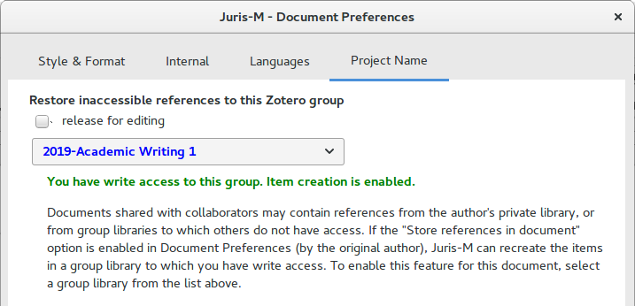

Jurism, Supervision, and Collaboration
Jurism, Supervision, and Collaboration
Frank Bennett (July 1, 2020)
Frank Bennett (July 1, 2020)
In a standard Jurism setup, My Library is private. Even when
synced to zotero.org, the contents can be accessed only by the
owner’s own account. Group libraries allow access by multiple
users, with read/write permissions on metadata and attachments
controlled by role assignments to each member of the library.
Group libraries lend themselves to collaborative editing, whether in real time in Google Docs, or asynchronously with independent edits merged using a Track Changes feature. However, there is one potential pitfall in collaborative environments. If a user adds a Jurism reference to the shared document from their personal library, citation updates will continue to work, but collaborators will not have access to the source item, and will not be able to make changes to it. If a private citation contains a spelling error (say), the only way for collaborators to make a correction to it is to edit the citation directly in the document text—but this is a no-no, as the edit will “freeze” the citation: if it is a full reference when edited, for example, it will no longer transform to its ibid or subsequent form according to context.
To avoid the problem, a Jurism document can be “locked” to a specific shared library to which the user (and all collaborators) have read/write access. When a lock is applied, all items cited in the document, and all items subsequently added, are copied to the shared library, and the document’s citation link is adjusted to point at the copy. This gives all collaborators access to the library content as well as the document, so that bibliographic edits can be done in the usual way, by editing the library item and refreshing citations.
This feature is particularly useful for writing supervision. A student author will typically begin their project with references from their personal library. When the time arrives for closer supervision, manually changing references in the document to point at a shared library is an unwelcome distraction, and pressure of time may make it impossible. The locking feature gives supervisor immediate read/write access to references cited in the document, where problems and misunderstandings can be sorted out efficiently at source.
The steps for “locking” a document, to be performed by the supervisor or editor, are as follows:
-
Create the library In Jurism, create a group library to hold the document citations (extraction to My Library is not supported).
-
Sync to client Sync the new library to the Jurism desktop client.
-
Document settings With Jurism running, open the document, and in the word processor open Document Preferences, then pick the tab for Project Name. After ticking the box next to release for editing, select the group library from the dropdown list.
-
Extracting references When Document Preferences is closed, Jurism may hang briefly while creating items for citations in the document. After it returns, click Refresh once to pick up any items that may have been missed on the first pass.
-
Sync Jurism to push the newly created items to the group library.
-
Invite collaborators to the Zotero group.
-
Save the document and provide it to collaborators as the new working copy. (If this step is performed in Google Docs, this step is not necessary.)
So long as collaborators work from the new, locked copy of the project document, all references will land in the shared library. This may give rise to duplicates, so the library should be curated from time to time by the editor to merge (not to delete) them.
